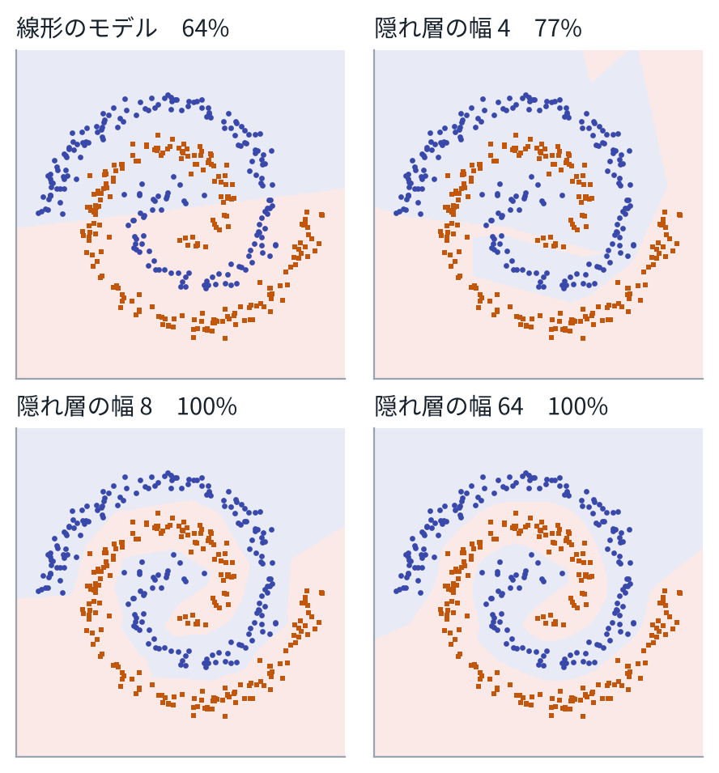

11 次式の限界
2 本の渦巻きに沿って並んだ点を、2 つのクラスに分けたい。2 章の softmax 回帰は、ロジットが入力の 1 次式なので、境目は直線になる。渦巻きは直線では分けられない。演習 3 では、正解率は 64% にとどまる。
1 章のように特徴（\(x_1^2\)、\(x_1 x_2\)、\(\sin\) など）を人が足せば、曲がった境目も作れる。しかし、画像のような入力で、よい特徴を人が選ぶのは難しい。ニューラルネットは、特徴を作る部分も重みで表し、まとめて学習する。
2層を重ねる
1 つの層は、「1 次式のあとに、決まった非線形の関数を通す」計算である。
\[ h = \sigma(W x + b) \]\(W\) は行列、\(b\) はベクトルで、どちらも重みである。\(\sigma\) は活性化関数で、成分ごとに働く。いまの主流は ReLU（\(\sigma(a) = \max(0, a)\)）か、それをなめらかにした GELU である。
これを重ねる。隠れ層が 2 つのネットは、次のとおりである。
\[ \begin{aligned} h_1 &= \sigma(W_1 x + b_1)\\ h_2 &= \sigma(W_2 h_1 + b_2)\\ z &= W_3 h_2 + b_3 \end{aligned} \]最後の \(z\) はロジットで、2 章と同じく softmax と交差エントロピーで学習する。途中の \(h_1, h_2\) が、ネットが自分で作った特徴である。この形を、多層パーセプトロン（MLP）または全結合ネットという。
活性化関数がないと、1 次式を何回重ねても 1 次式にしかならない（\(W_2(W_1 x) = (W_2 W_1) x\)）。非線形の \(\sigma\) をはさむことで、曲がった関数を表せる。幅（各層の数の個数）を十分に取れば、MLP はどんな連続関数でも好きな精度で近似できることが知られている（万能近似）。ただし、それに必要な幅や、学習で本当にそこへたどり着けるかは、別の問題である。

重みの数は、層ごとに「入力の数 × 出力の数 + 出力の数」である。演習の 2 → 64 → 64 → 2 のネットなら、\((2\cdot 64 + 64) + (64 \cdot 64 + 64) + (64\cdot 2 + 2) = 4482\) 個になる。VLA の重みは数億〜数十億個あるが、数え方は同じである。
3逆伝播：勾配を出口から求める
学習には、損失の、すべての重みについての勾配が要る。重みが 1 億個あっても、勾配は、順に計算する 1 回（順伝播）と、出口から戻る 1 回（逆伝播）で、まとめて求められる[1]。
ここでは、演習のコードに合わせて、データ \(N\) 個を行に並べた行列で書く。層 \(l\) の入力を \(H_{l-1}\)（\(N\) 行）、1 次式の結果を \(A_l = H_{l-1} W_l + b_l\)、出力を \(H_l = \sigma(A_l)\) とする。出口の勾配は、2 章で求めた「予測 − 正解」である。
\[ G_{\text{出口}} = \frac{\partial L}{\partial Z} = \frac{1}{N}\big(P - Y\big) \]\(P\) は予測した確率、\(Y\) は正解を 1 にした並び（one-hot）を、行に並べたものである。ある層の \(A_l\) についての勾配 \(G_l = \partial L / \partial A_l\) がわかれば、連鎖律から、次の 3 つが出る。
\[ \begin{aligned} \frac{\partial L}{\partial W_l} &= H_{l-1}^\top G_l\\ \frac{\partial L}{\partial b_l} &= \sum_{\text{行}} G_l\\ \frac{\partial L}{\partial H_{l-1}} &= G_l\, W_l^\top \end{aligned} \]最後のものを、活性化関数の微分と成分ごとに掛けると、1 つ前の層の \(G_{l-1}\) になる。ReLU なら、微分は「入力が正なら 1、負なら 0」である。
\[ G_{l-1} = \big(G_l\, W_l^\top\big) \odot \mathbb 1\big[A_{l-1} > 0\big] \]これを出口から入口へ繰り返す。順伝播で \(H_l\) と \(A_l\) を取っておけば、逆伝播の計算量は順伝播とほぼ同じである。1 つずつ重みを動かして差を取る方法（数値微分）では、重みの数だけ順伝播が要るので、比べものにならない。
実際には書かなくてよい。PyTorch や JAX は、順伝播の計算を記録し、逆伝播を自動で行う（自動微分）。損失を計算して loss.backward() と書けば、全部の重みの勾配が入る。それでも一度は手で書いておくと、勾配が消える、爆発する、といった問題の意味がわかるようになる。演習 3 では、逆伝播の結果が数値微分と一致することを確かめる。
4学習を安定させる工夫
層を深くすると、勾配が層を通るたびに小さくなったり大きくなったりして、学習が進まなくなる。このあとの章のモデルで必ず使われている工夫を、5 つ挙げる。
- 初期化。重みの初期値の大きさを、入力の数 \(n\) に合わせる。ReLU なら、分散 \(2/n\) の正規分布から取る（He の初期化）[2]。各層の出力の大きさが、深さによらずそろう。
- Adam。勾配の移動平均 \(m\) と、勾配の 2 乗の移動平均 \(v\) を持ち、重みごとに歩幅を調整する[3]。 \[ \begin{aligned} m &\leftarrow \beta_1 m + (1-\beta_1)\,g\\ v &\leftarrow \beta_2 v + (1-\beta_2)\,g^2\\ \theta &\leftarrow \theta - \eta\,\frac{\hat m}{\sqrt{\hat v} + \epsilon} \end{aligned} \] \(\hat m, \hat v\) は、はじめの偏りを補正したもの。深層学習の既定の最適化手法である（重みの減衰を分けた AdamW がよく使われる）。
- 学習率の予定。はじめは小さくして徐々に上げ（ウォームアップ）、後半で下げていく。
- 正規化。層の出力を、平均 0、分散 1 にそろえてから、学習する倍率とずらしを掛ける。Transformer では、トークンごとにそろえる LayerNorm を使う[4]。 \[ \mathrm{LN}(h) = \gamma \odot \frac{h - \mu(h)}{\sqrt{\mathrm{var}(h) + \epsilon}} + \beta \]
- 残差接続。層の出力を \(h + F(h)\) のように、入力に足す形にする[5]。勾配が足し算の道を通って、深い層まで弱まらずに届く。5 章の Transformer は、すべての部品がこの形でつながっている。
5演習
演習 3ニューラルネットと逆伝播
重みは numpy の配列で持ち、順伝播、逆伝播、Adam を手で書いてある（MLP クラス、60 行ほど）。10 秒ほどで終わる。
python3 vla_math/ch03_mlp.py出力の一部：
(1) 線形のモデル（入力 2 → 出力 2）
重み 6 個、学習後の交差エントロピー 0.604、検証データの正解率 63.7%
(2) 隠れ層 2 つのニューラルネット（2 → 64 → 64 → 2、ReLU）
0 回目: 交差エントロピー 0.956、検証データの正解率 50.0%
200 回目: 交差エントロピー 0.003、検証データの正解率 99.7%
重みの数 4482 個
(3) 勾配の確認（逆伝播 と 数値微分）
30 か所で比べた相対誤差: 最大 2.6e-07、中央値 1.8e-09
(4) 隠れ層の幅を変える（2 → 幅 → 幅 → 2、各 3000 回）
幅 2: 重み 18 個、検証データの正解率 50.0%
幅 4: 重み 42 個、検証データの正解率 77.0%
幅 8: 重み 114 個、検証データの正解率 99.7%
見るところ：
- (3) 逆伝播の勾配は、数値微分と 7 桁以上一致する。ReLU の折れ目をまたぐと数値微分のほうがずれるので、差分の幅を小さく取っている。
- (4) 幅 2 では、まったく分けられない（50%）。ReLU の出力が 0 になったまま動かない「死んだ」ユニットが出やすい。幅を増やすと表せる形が増える。
変えてみる：活性化関数を np.tanh にする（逆伝播の微分も \(1 - h^2\) に変える）。層を 5 つに増やし、初期化の \(\sqrt{2/n}\) を 1 にすると何が起こるかを見る。
6まとめ
- ニューラルネットは、「1 次式 → 非線形の関数」を重ねたものである。途中の層が、特徴をデータから作る。
- 逆伝播は、連鎖律を出口から順に使って、全部の重みの勾配を 1 往復で求める。出口の勾配は、2 章の「予測 − 正解」である。
- 深いネットを学習できるのは、初期化、Adam、正規化、残差接続などの工夫による。このあとの Transformer は、これらを全部使っている。
7確かめる問題
- 活性化関数を除くと、何層重ねても 1 次式になるのはなぜか。
- 層 \(A = HW + b\) について、\(\partial L/\partial W = H^\top G\) となることを、成分で書いて確かめよ。
- 重みが \(P\) 個あるとき、数値微分で勾配を求めると順伝播が何回要るか。逆伝播ならどうか。
- 残差接続 \(h + F(h)\) で、勾配が深い層まで届きやすくなるのはなぜか。\(\partial (h + F(h)) / \partial h\) を書いて考えよ。
8読むもの
※参考文献
- D. E. Rumelhart, G. E. Hinton and R. J. Williams, "Learning representations by back-propagating errors," Nature 323, 533–536, 1986.
- K. He, X. Zhang, S. Ren and J. Sun, "Delving Deep into Rectifiers: Surpassing Human-Level Performance on ImageNet Classification," 2015. arXiv:1502.01852
- D. P. Kingma and J. Ba, "Adam: A Method for Stochastic Optimization," 2014. arXiv:1412.6980
- J. L. Ba, J. R. Kiros and G. E. Hinton, "Layer Normalization," 2016. arXiv:1607.06450
- K. He, X. Zhang, S. Ren and J. Sun, "Deep Residual Learning for Image Recognition," 2015. arXiv:1512.03385
- S. J. D. Prince, "Understanding Deep Learning," MIT Press, 2023. 本の全文が公開されている。https://udlbook.github.io/udlbook/
- 斎藤康毅『ゼロから作る Deep Learning Python で学ぶディープラーニングの理論と実装』オライリー・ジャパン, 2016.
- A. Karpathy, "Neural Networks: Zero to Hero," 動画の講義. https://karpathy.ai/zero-to-hero.html